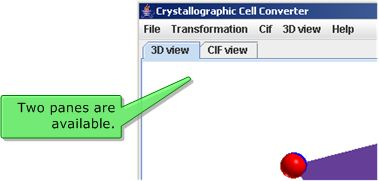
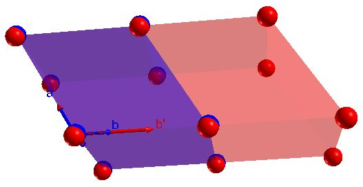
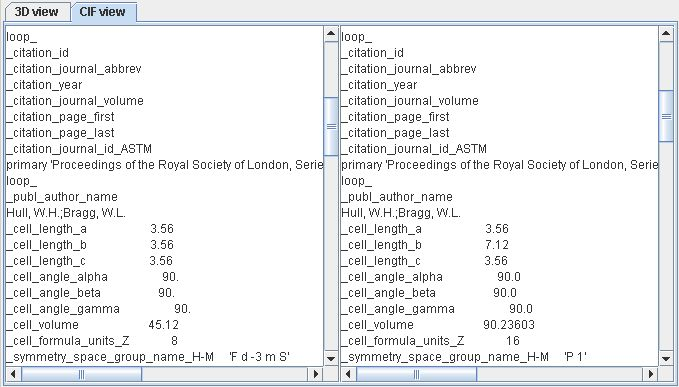
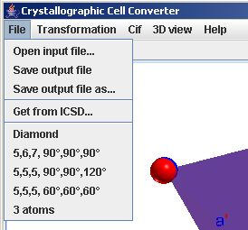
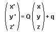
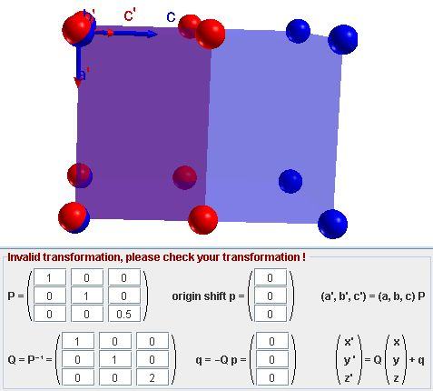

Very often when comparing different crystalline structures, cell
transformations have to be performed for comparison purposes. The
present applet helps to transform a structure described in CIF format
with given cell parameters to a new cell. By specifying the cell
transformation, this applet will calculate the new unit cell
constants and the new atom coordinate of the atoms in the new cell.

3D view :
The 3D representation of the structures. The structure in the original
cell is colored in blue. The same structure described in the new cell
is represented in red.
You may choose a parallel or a perspective view in the 3D view
menu. This menu allows also the setting of the point around which the
model is rotated
(gravity center of the red or the blue model).

A unit cell transformed by doubling the b
parameter.
CIF view :
The left pane shows the original imported CIF to be transformed. The
right pane shows the transformed file, which can be saved (over the
same file or by creating a new one).
It is possible to edit the input structure by selecting Edit input
file in the CIF menu. The changes will be effective as soon
as the edition is terminated by selecting Apply changes.
Please note that this does not affect the opened CIF file on your disk.

The original file on the left, the transformed file on the right.
How to import / export files :
- Open a file with Open input file... menu item.
- 'Drag and drop' a file to the main window in order to open it.
- You may directly retrieve a record form the ICSD database and
open it by Get from ICSD... menu item.

The file menu let you open or save a file from/to your hard
disk.
The transformation :
The bottom panel lets you define a transformation according to the
notation given in chapter 5.1 of volume A of the International Tables
of Crystallography. This transformation is a combination of a matrix P
and a shift of origin defined by the vector p.
The new cell parameters a' b' c' are :
(a', b', c') = (a, b, c) P
To calculate the new positions of the atoms we use the matrix Q
= P-1 and the vector q = -Q p.
The new positions x' y' z' are then :

You may edit either values of the matrix P or Q. The
inversion is then automatically calculated. The same applies for
vectors p and q.
If P or Q is not invertible, then the transformation is
invalid.
Another invalid transformation occurs when the transformed atoms
positions don't match exactly the original positions. In this case the
output file can't be saved.
